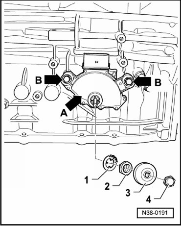
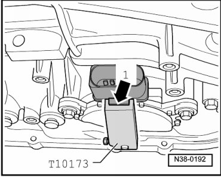

Multi Function Transmission Range Switch
Multi Function Transmission Range Switch
Special tools, testers and auxiliary items required
• Headlight washer adjustment tool (T10173)
• Torque wrench (VAG 1331)
Removing
For reasons of clarity, the transmission is shown removed throughout this procedure.
- Place selector lever in the "P" position.
- Remove the cap nut - 4 -.

- Remove cover - 3 - from selector shaft.
- Carefully bend back the hooks of the lock washer - 1 - using a screwdriver.
If one hook breaks off, the washer must be replaced.
- Now remove the nut - 2 - and lock washer - 1 - from selector shaft.
- Disconnect connector from multi function Transmission Range (TR) switch (F125).
- Remove bolts - arrows B - and remove multi function transmission range switch - arrow A - from selector shaft.
Installing and adjusting
- Move selector shaft lever to the "N" position on transmission.
- Connect multi function Transmission Range (TR) switch (F125) to shift rod.
- Tighten bolts - arrows B - hand tight for multi function Transmission Range (TR) switch (F125).
- Place setting gauge (T10173) onto selector shaft.

- Unhook selector lever cable.
- Turn the multi function Transmission Range (TR) switch - A - so far until the tab on the connector - arrow 1 - engages the groove of the setting gauge (T10173).
- Tighten bolts - arrows - for multi function Transmission Range (TR) switch (F125) to 6 Nm.
- Now remove setting gauge (T10173) from selector shaft.
- Hook selector lever cable in.
Further installation is performed in reverse order.
- Check the adjustment of the selector lever cable. Refer to --> [ Selector Lever Cable Checking and Adjusting ] Procedures.